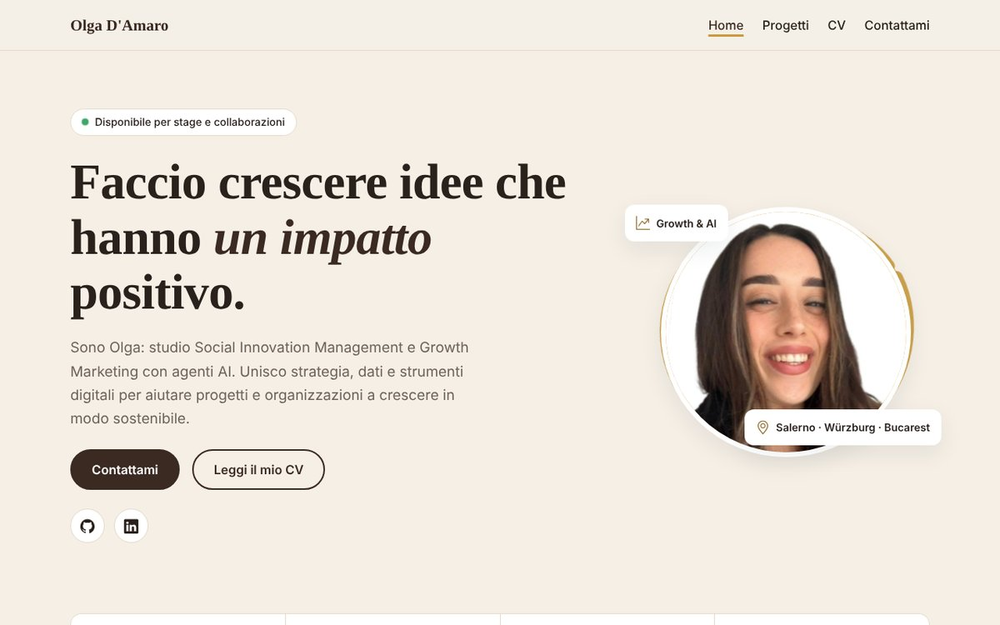

Strategie di crescita
Analizzo dati e canali per capire cosa fa crescere un progetto, e trasformo le idee in esperimenti misurabili.
Disponibile per stage e collaborazioni
Sono Olga: studio Social Innovation Management e Growth Marketing con agenti AI. Unisco strategia, dati e strumenti digitali per aiutare progetti e organizzazioni a crescere in modo sostenibile.
La crescita migliore è quella che lascia qualcosa di buono intorno a sé.
Mi chiamo Olga, ho 26 anni e studio Social Innovation Management all'Università di Salerno, con un doppio titolo in Global Dynamics all'Università di Würzburg, in Germania. In parallelo frequento il master in Growth Marketing e Agenti AI, dove imparo a usare dati, automazioni e intelligenza artificiale per far crescere un progetto.
Dal 2023 al 2024 ho lavorato nella consulenza SAP in area accounting, tra configurazione per i clienti, assistenza e formazione degli utenti. Nel 2024 ho svolto un traineeship alla Camera di Commercio Italiana per la Romania, a Bucarest: esperienze che mi hanno insegnato a muovermi tra processi aziendali, culture e lingue diverse.
Fuori dallo schermo pratico yoga e mi appassionano le discipline orientali: mi hanno insegnato costanza, ascolto e attenzione al dettaglio, che porto anche nel lavoro.
Cosa porto in un team
Analizzo dati e canali per capire cosa fa crescere un progetto, e trasformo le idee in esperimenti misurabili.
Uso l'intelligenza artificiale per togliere lavoro ripetitivo e lasciare più tempo a quello che conta davvero.
Porto la visione dell'innovazione sociale: crescere sì, ma generando valore per le persone e per il territorio.
Da Salerno all'Europa
Le basi di azienda, marketing e organizzazione.
Configurazione, assistenza e formazione degli utenti.
Quattro mesi tra imprese italiane e romene.
Social Innovation, Global Dynamics e Growth Marketing con AI.
Strumenti e lingue
Caso di studio

Sono disponibile per stage, collaborazioni e progetti a impatto sociale.
Scrivimi